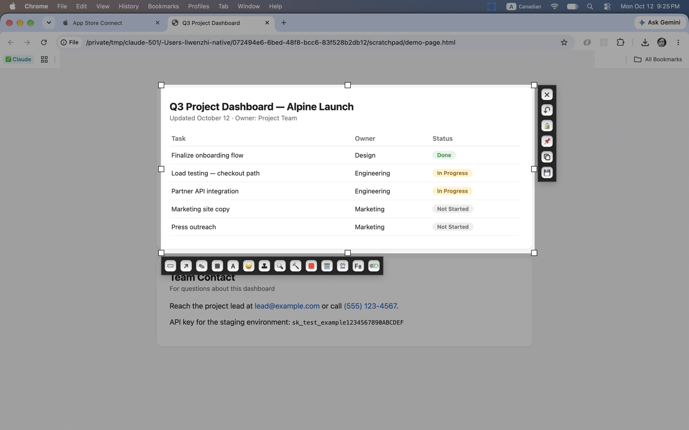
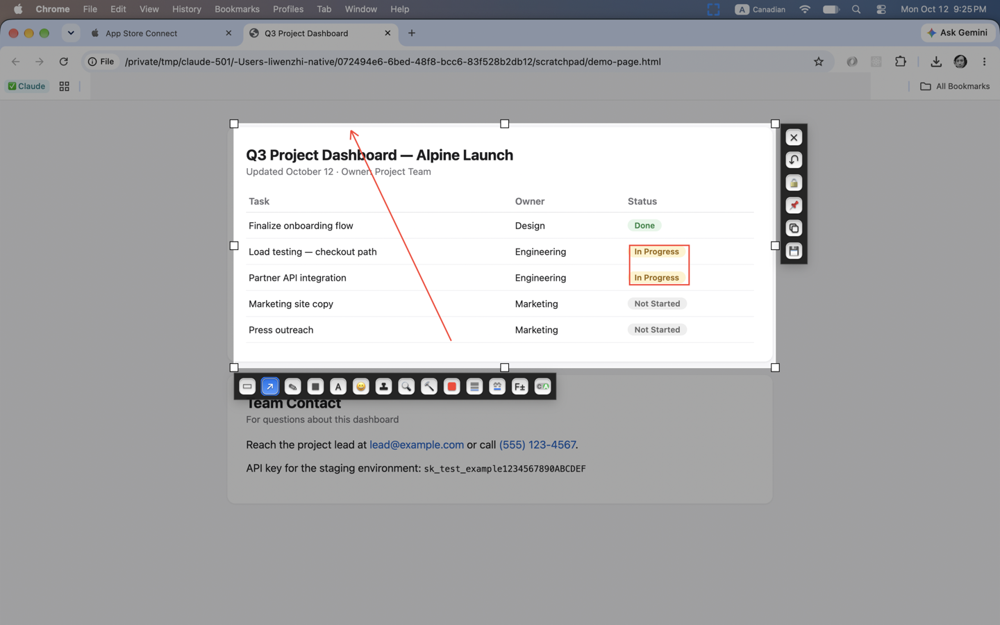

Capture any region instantly, annotate it right on top, and catch sensitive info before you share — emails, phone numbers, API keys, card numbers.
Support Privacy Policy

A global hotkey or the menu bar icon starts a capture from anywhere — no need to switch apps. Resize or reposition the selection before confirming.
Rectangle, Ellipse, Starburst, Arrow, Pen, a natural tapered Brush, Marker, Sprayer, Mosaic blur, a shattered-glass Hammer effect, Magnifier, Text, Emoji, and preset Stamps.
snipr can scan a capture for emails, phone numbers, API keys, and card numbers, and flag them before you send it — entirely on-device.
Copy straight to the clipboard, save to a folder you choose with a timestamped filename, or pin the result as a small always-on-top floating window.